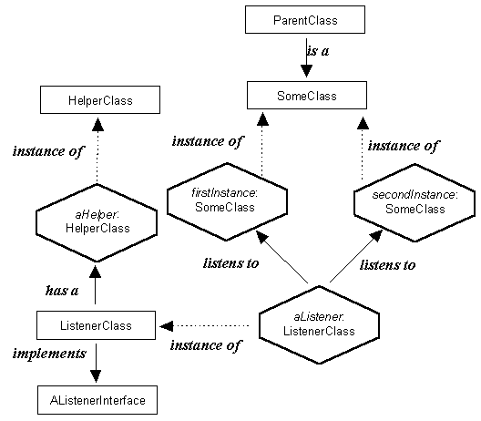

Instance Diagrams

An instance diagram shows, in hexagonal boxes, the actual instances of classes
which are required for a particular artefact. It also shows the roles they play and the
relationships between them. The class hierarchy relationships of the classes can
also be shown.